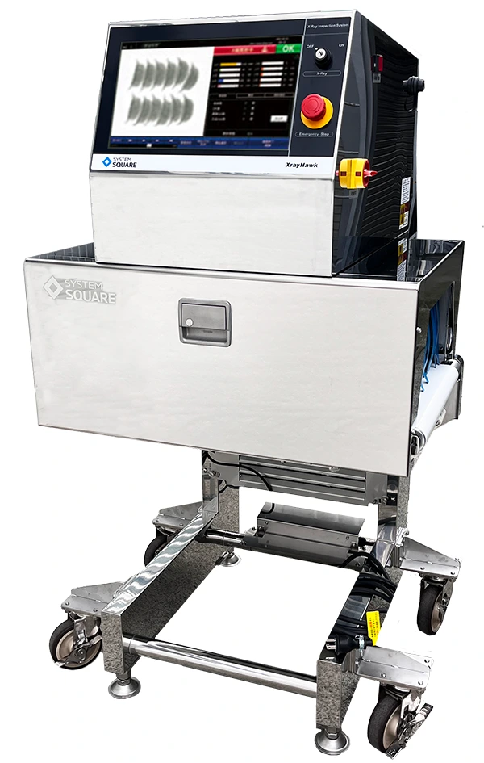
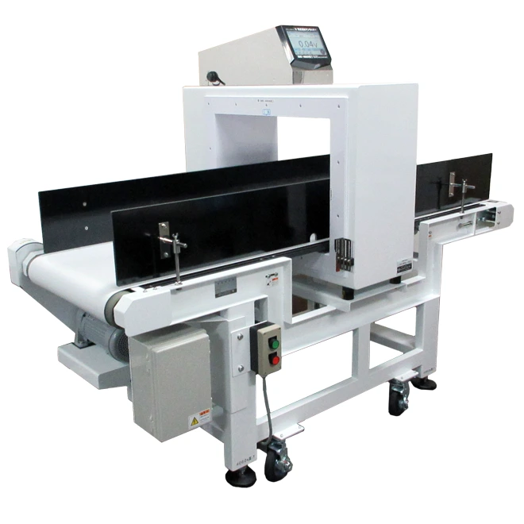
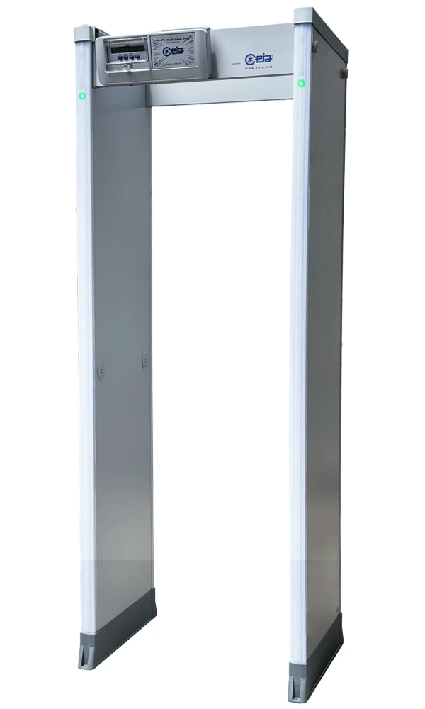
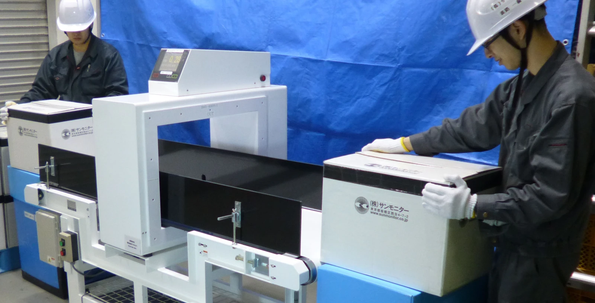
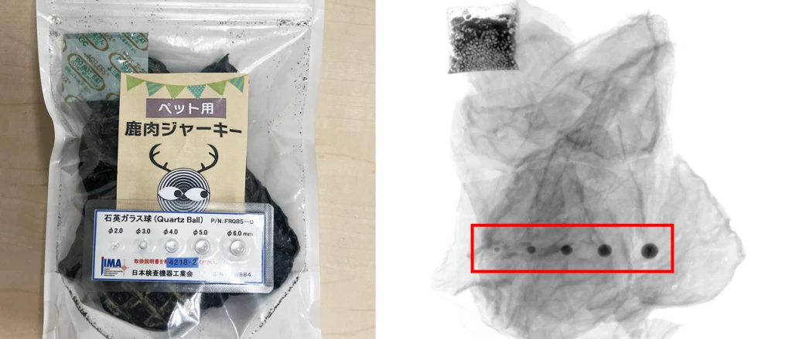
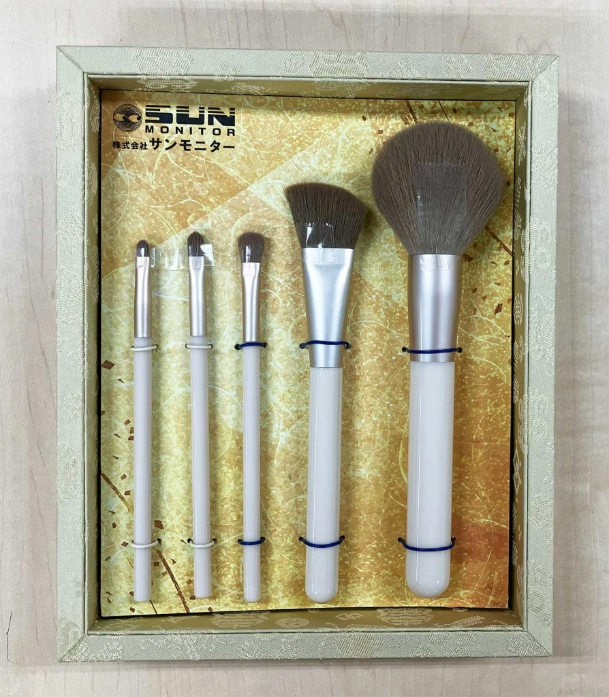
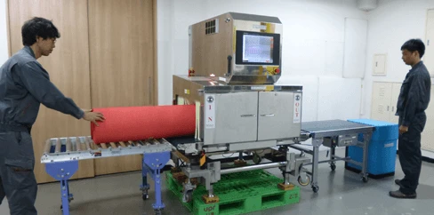

検査・セキュリティ機器のレンタル・販売
必要な検査を、必要なときに。



機種選びから現地での設置・設定まで、技術者がサポート。
製品を探す検査・セキュリティ機器のレンタル・販売



機種選びから現地での設置・設定まで、技術者がサポート。
製品を探す金属探知機・X線検査機・検針機・セキュリティ機器
掲載機種は一例です。レンタル・販売の可否、在庫、料金はお問い合わせください。
現場のお困りごとに合わせて、必要な機器をご提案します。

必要な機器を選び、現地で設置・設定し、ご利用後に回収する。サンモニターは、技術者による一貫したサポートで検査体制づくりを支えます。
期間や設置環境、検体に合わせてご提案。機種が決まっていない段階でも、ご相談いただけます。
レンタルを相談する検査対象・期間・場所などをお伺いします。
必要に応じて実際の検体で検出を確認します。
技術者が環境に合わせて設置・調整します。
ご利用中のご相談から終了後の回収まで対応します。
実際の検体を用いた検査事例をご紹介します。

金属探知機とX線検査機を用いた検査事例。
現行サイトの事例へ ↗
X線で内部を確認する、異物検査の事例。
現行サイトの事例へ ↗
お手元の検体で検出できるか、サンプルテストをご相談ください。
サンプルテストを相談 ›写真はサンモニター現行サイト掲載の実際の検体・検査風景です。事例リンクは該当記事へ移動します。
必要な期間に合わせてご相談いただけます。機種・在庫・設置場所により対応が異なりますので、ご希望の利用期間をお知らせください。
検査するもの、検出したい異物、サイズ、包材などをお伺いして機種をご提案します。必要に応じてサンプルテストもご相談いただけます。
技術者が現地での設置・設定から回収まで対応します。現場の条件・日程を伺い、必要なサポートをご案内します。
機種・利用期間・設置場所・サポート内容に応じて個別にお見積りします。ご希望の条件をお問い合わせください。
レンタルのほか、販売・中古販売もご相談いただけます。対象機種や在庫についてはお問い合わせください。
機種が決まっていなくても、検査したいものからご相談いただけます。
お問い合わせは現行サイトのフォームへ移動します。資料請求・サンプルテストもご相談いただけます。